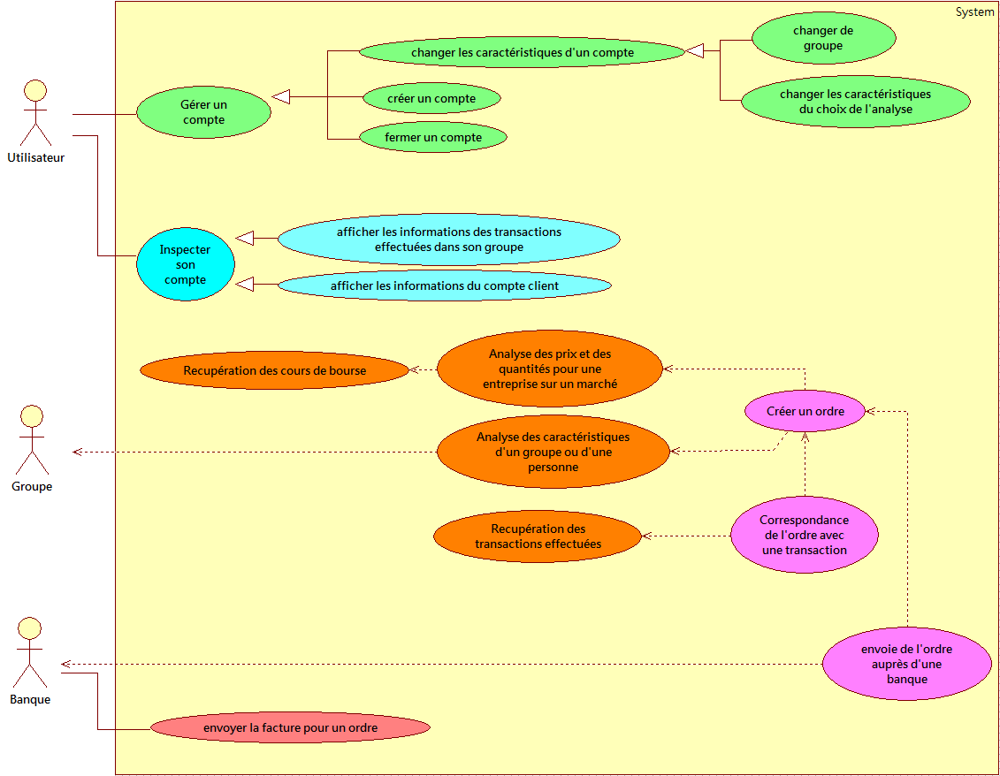
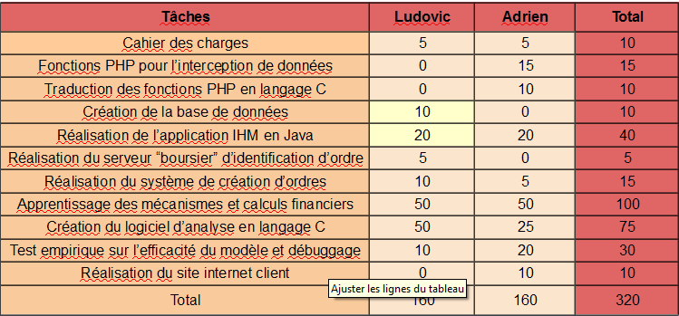
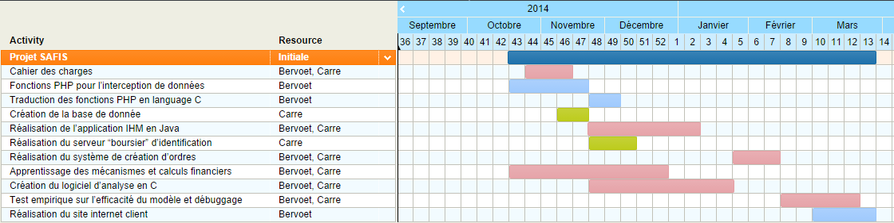
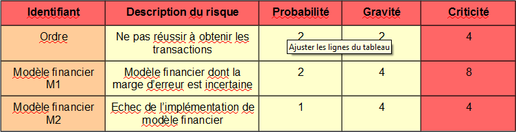

Automated Financial Investment System
Présentation
Le but de notre projet est de créer une application grand public d’achat et de vente de titres financiers entièrement automatisé. Cela signifie que les informations dévoilées à l’utilisateur seront restreintes, aucun graphe ou analyse de données en front-office.
Réalisation
Le projet sera séparé en quatre parties :
- Un logiciel codé en C séparé en trois fonctionnalités : récupération des données de la bourse, anayse des données (prévisions de cours, gestion des risques, etc…) et effectuer un ordre automatisé.
- Un site internet permettant de créer un compte et compléter son profil utilisateur.
- Une application IHM codée en Java permettant une modification du profil et une visualisation des informations importantes.
- Réalisation d’un serveur en C simulant le système boursier (pour éviter l’utilisation d’argent réel).
Utilité
Ce projet est novateur non pas pour ses fonctionnalités puisque les grandes institutions financières automatisent déjà leurs investissements (High Frequency Trading par exemple) mais plutôt par sa cible.
En effet, nous ciblons des personnes appartenant à la classe moyenne. Des personnes qui n’auraient jamais été investisseurs directes puisque leurs fonds ne sont pas très élevés et leurs temps est réduit.
Afin d’augmenter les gains ou le poids de ces investisseurs nous avons un système de groupe, des investisseurs peuvent se mettrent en commun et adhèrer à une politique d’investissement afin de créer un effet de levier.
Introduction
Notre système doit être capable d’obtenir les cours d’action en temps réel afin d’effectuer des calculs de prévision des fluctuations, ou de risques, etc…
A la suite de ces calculs il devra être capable de décider d’acheter ou de vendre une quantité n d’une action/option x. Cette décision prise, il réalisera un ordre d’achat ou de vente qu’il enverra a notre système de bourse.
Ce système devra récupérer les ordres d’achats et de ventes sur le vrai marché financier afin que nos ordres virtuels puissent s’identifier à un ordre réel.
I – Description du projet du point de vue “utilisateur”
A – Présentation
Site internet
Le site Internet permettra dans un premier temps de télécharger le logiciel AFIS. A la fin du projet, s’il nous reste du temps, nous enrichirons le site web afin de pouvoir éditer ses informations en passant par le site. Cela permettra aux utilisateurs de modifier ses informations ou qu’il soit.
Informations individuelles
Un utilisateur pourra consulter les actions et options qu’il possède ainsi que leurs valeurs cumulées à la vente (si il faisait le choix de tout vendre maintenant quel serait le montant des ventes) et la valeur cash flow (argent pas encore investit).
Informations groupe
Cela permet à l’utilisateur de visualiser les actions/options détenues par ses groupes ainsi que la valeur à la vente de ces derniers. Il aura la possibilité de rejoindre un groupe de manière automatique ou manuelle.
Profil
L’utilisateur devra compléter son profil afin d’utiliser le logiciel. Son profil déterminera la stratégie d’investissement que le système emploiera. Les informations à rentrer sont nombreuses et détaillées allant du bénéfice minimal espéré au réinvestissement maximal.
Historique
Il sera possible de visualiser les différentes transactions effectuées par le système : vente ayant créé un bénéfice x, achat d’une action au cours y,etc…
B – Fonctionnalités
L’intérêt de ce projet étant de limiter les interactions humaines autres que la visualisation volontaire la seul fonctionnalité de l’utilisateur est de remplir son profil permettant de définir la stratégie d’investissement. Un utilisateur pourra éventuellement rejoindre un groupe d’investissement manuellement. Le reste des fonctionnalités utilisateur se limitent a regarder ce que l’on veut bien lui montrer à l’exception de la création et suppression de compte.
C – Contexte
Notre système est majoritairement destiné aux personnes ayant des fonds moyennement importants et un désintérêt ou un manque de temps pour l’analyse boursière. Cependant on peut également imaginer des personnes ayant des fonds très important être intéressé par le taux prélevé sur les transaction faible que nous proposons.
Il est également possible d’utiliser notre système afin de tester des modèles d’investissement. Puisqu’il permet de simuler des achats/ventes d’actions/options on peut imaginer une personne voulant créer un logiciel similaire en utilisant un autre modèle mathématiques ou alors une personne souhaitant tester différents modèles afin d’identifier le plus performant dans un contexte particulier.
D – Etude de l’existant
Les systèmes similaires au nôtre, de type algorithmic trading, sont essentiellement présent dans les banques, les fonds de pension et les fonds d’investissement. On ne peut pas citer de logiciel puisqu’ils ne sont pas connus du public.
Ces établissements financiers utilisent surtout ces systèmes pour faire du High Frequency Trading, que l’on ne proposera pas pour des raisons de complexité et de coûts.
Le principe est d’effectuer un nombre extrêmement important de transactions toutes les millisecondes ce qui permet de réaliser un bénéfice relativement faible par transaction mais un bénéfice important sur une journée de trading.
Virtu Financial, très grande entreprise dans le HFT, a déclaré avoir réaliser des pertes une journée sur 5 ans d’utilisation.
II – Description du projet du point de vue “développeur”
A – Description modulaire

B – Plate-Forme et outils de développement
Le site internet sera réalisé (c’est déjà bien). Une récupération des données se fera en PHP dans un premier temps puis traduit en C de manière à être en lien direct avec les calculs, les flux interceptés seront parser puis stockés sur une base de données mySQL.
L’analyse des données sera effectuée en C en utilisant la bibliothèque mySQL pour interagir avec la base de données, aucune interface graphique ne sera réalisé pour cette partie du projet, le système boursier virtuel sera réalisé en C également. L’interface homme-machine sera quant à elle réalisée en Java natif.
C – Apprentissage Technique
Dans la partie interception des données il faudra d’apprendre à intercepter et analyser les fichiers x-amf. Un léger apprentissage est nécessaire pour manipuler une base de données en C avec la bibliothèque mySQL. La plus grande partie d’apprentissage ne sera pas technique et portera sur la compréhension des mécanismes financiers dans leur ensemble ainsi que des modèles mathématiques ou du modèle mathématique que l’on choisira d’implémenter.
D – Roadmap et répartition des tâches


E – Analyse des risques
A ce jour nous ne sommes pas encore certain d’obtenir l’intégralité des ordres d’achat/vente qui nous intéressent ce qui mettrait en péril la légitimité de notre projet. En effet, puisque nous ne disposons pas de fonds illimité, nous avons choisi de tester pratiquement notre projet en reproduisant une partie de la bourse comme expliqué plus haut. Si nous ne parvenons pas à obtenir un nombre conséquent de transactions d’ordres, nous ne pourrons identifier nos ordres virtuels à des ordres réels. Cela signifie que les résultats de notre projet ne seront jamais significatifs puisque la réalité de l’offre et de la demande ne serait pas pris en compte.
Le second risque important est de ne pas parvenir à un implémenter un modèle financier nous permettant d’effectuer des prévisions suffisamment plausibles. Cela signifierait que nos investissements relèveraient plus de la spéculation hasardeuse que de l’analyse scientifique.
